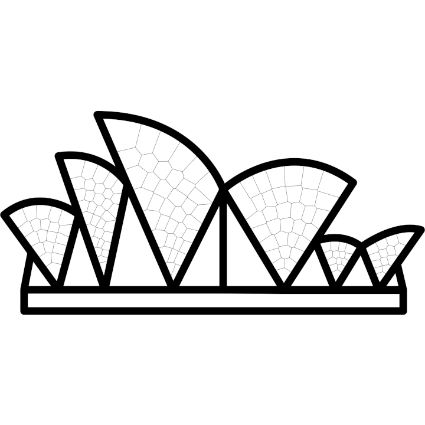

Sydney Algorithms and Computing Theory (SACT)
School of Computer Science
The University of Sydney

About the group
The Sydney Algorithms and Computing Theory group nucleates researchers from the University of Sydney interested in foundational aspects of computer science. Our research interests include algorithmic game theory, combinatorial optimization, computational complexity, computational geometry, graph drawing, and machine learning. The unifying theme running through our research is the inquiry into the nature of efficient computation.
Here you will find information about our people, our seminar, and our former members.
Open positions
Postdocs
We have a number of postdoctoral positions available (each for 2-3 years), in all areas of Theoretical Computer Science, with at least one focusing on streaming algorithms and another on planning and synthesis. Starting date flexible, but expected around mid- or late 2026.
Base salary (Level A): approx AUD 117k–120k p.a.+ 17% superannuation (retirement plan), with funding to attend conferences and no teaching obligations.
Excellent candidates are encouraged to contact us at clement.canonne@sydney.edu.au, or reach out to discuss directly during FOCS in December.
Ph.D.
We also have several PhD positions available in Theoretical Computer Science, with at least one focusing on computational geometry and one on streaming algorithms. Starting date is flexible, but expected around mid- or late 2026.
PhDs are for a duration of 3.5 years (with no mandatory coursework). The PhD scholarships include:
- tuition fee waiver
- living allowance (approx AUD 40k/year)
- funding to present at international workshops and conferences
- no teaching obligations, but opportunities for (remunerated) teaching available
Excellent candidates are encouraged to contact us at clement.canonne@sydney.edu.au, or reach out to discuss directly during FOCS or the Celebration of TCS event in December.